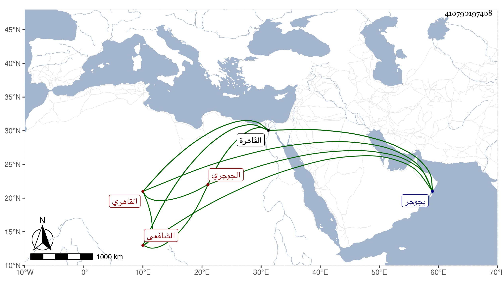

0902Sakhawi.DawLamic.ITO20230111-ara1.EIS1600.410790197408
Biography ID: 410790197408
295
محمد بن عبد المنعم بن محمد بن محمد بن عبد المنعم بن أبي الطاهر إسمعيل الشمس بن نبيه الدين الجوجري ثم القاهري الشافعي ويعرف بين أهل بلده بابن نبيه الدين وفي غيرها بالجوجري . ولد في إحدى الجماديين والظن أنه الثانية سنة إحدى وعشرين وثمانمائة أو التي بعدها بجوجر وتحول منها إلى القاهرة صحبة جده لأبيه بعد موت والده وهو ابن سبع فأكمل بها القرآن وحفظ المنهاج الفرعي مع أن جده كان مالكيا وكذا الأصلي وألفية ابن ملك وعرض بعضها واشتغل بالفنون فأخذ النحو بقراءته عن الحناوي والشهاب السخاوي وأبي القسم النويري وعظمت ملازمته له فيه وفي غيره من الفنون سيما في ابتداء أمره وترعرعه وبقراءة المحيوي الدماطي في شرح التسهيل عن ابن الهمام وبقراءة الزين طاهر غالب المغني عن القاياتي في آخرين كالشمني والمحلى والكافياجي بل قرأ العربية في ابتدائه على البدر بن الشر بدار كما قرأ في ابتدائه على فقيهه النور أخي حذيفة والفقه عن الشرف السبكي والونائي والقاياتي وابن المجدي والعلم البلقيني والمحلى والمناوي واشتدت عنايته بملازمته بحيث أخذ عنه التنبيه والحاوي والبهجة والمنهاج تقسيما غير مرة كان أحد القراء فيه وغير ذلك وعن الأول الحاوي وعن الثاني ما عدا البهجة مع ما أقرأه من الروضة وعن السادس بقراءته شرحه للمنهاج ومن الاستسقاء في الروضة إلى بيع الأصول والثمار ولازمه في أخذ جل تصانيفه كشرح البردة وغيرها وأصوله عن المحلى قرأ عليه شرحه لجمع الجوامع والشمس البدرشي قرأ عليه الجار بردى والمناوي أخذ عنه البيضاوي وجمع الجوامع تقسيما كان أحد القراء فيه في آخرين كالشرواني والشمني والنويري والكافياجي وأبي الفضل المغربي وأصول الدين عن هؤلاء الخمسة وكذا المعاني والبيان عنهم مع القاياتي والزين جعفر العجمي نزيل المؤيدية ومما قرأ عليه المختصر والمنطق عن الخمسة والعروض والقوافي عن الشهاب الأبشيطي والفرائض والحساب عن ابن المجدي والبوتيجي والتفسير عن الشمني والكافياجي وشيخنا ووقع له معه فيه ما أوردته في الجواهر ، والحديث عن شيخنا أخذ عنه شرحه للنخبة إما قراءة أو سماعا لما عدا المجلس الأخير منه ظنا واليسير من شرح ألفية العراقي بقراءته بل سمع غالبه وسمع عليه في الحلية وفي الكتب الستة وغيرها وكذا سمع على الزين الزركشي في صحيح مسلم بل قرأ الشفا والصحيح على القاضي سعد الدين بن الديري وكتب الخط المنسوب وعرف بمزيد الذكاء وأذن له غير واحد بالإقراء والإفتاء وتصدى لذلك قديما في حياة كثير من مشايخه حتى كان المحلى يرسل له الفضلاء للقراءة عليه في تصانيفه وغيرها ونوه هو والمناوي به جدا بل كان المناوي يناوله الفتوى ليكتب عليها واستنابه في القضاء في ولايته الأولى فباشر قليلا بحيث ذكر أنه لا يعرف من قضائه مما يضبط بالحكم سوى أربعة قضايا ثم تعفف عن ذلك ، هذا مع اشتغاله معظم عمره بالتكسب في بعض الحوانيت بسوق الشرب وكذا بالسكر ونحوه بل وقبل ذلك جلس عند العز بن عبد السلام شاهدا حين كان يتناوب مع غيره القضاء في جامع الصالح وحمد العقلاء صنيعه في ترك القضاء ، وأخذ عنه الفضلاء طبقة بعد أخرى وصار بأخرة شيخ القاهرة وقسموا عليه الكتب فكان ممن قرأ عليه في التقسيم سنة ثلاث وثمانين الحليبي وابن قريبة وسعد الدين الذهبي والكمال الغزي وفي التي تليها إلا الرابع فبدله المحيوي عبد القادر العنبري وفي التي تليها هو والحليبي وابن قريبة والغزي وفي التي تليها الذهبي بدل الغزي ، واتسعت حلقته جدا سيما حين تحول للمؤيدية ثم جامع الأزهر وقصد بالفتاوى ، وكتب على عمدة السالك لابن النقيب شرحا في جزء سماه تسهيل المسالك في شرح عمدة السالك ، وكذا على الإرشاد مختصر الحاوي لابن المقري في أربعة فأزيد وعلى شذور الذهب مطول ومختصر سبكه وقصيدة البوصيري الهمزية التي أولها كيف ترقى رقيك الأنبياء في مطول ومختصر أيضا سمى أحدهما خير القرى في شرح أم القرا والمفرجة وغير ذلك من نظم ونثر ، وسارع بقوة ذكائه في الكتابة على الفتاوى فكثرت مخالفته التي أدى إليها عدم تأنيه وربما ينبه على ذلك فيها وفي تصانيفه فلا يكاد يرجع ويبرهن على ما تورط فيه وكذا كثر تسارعه إلى الأذن بالفتوى والتدريس بل والتقريض على التصانيف الصادرة من غير المتأهلين حتى إنه كتب لشخص كان يسمى تاج الدين الشامي ولي نظر الإسطبل مرة على مصنف زعم أنه اختصر فيه المهذب ما نصه كما نقلته من خطه : وقفت على هذا المؤلف ورأيت في أبوابه وفصوله ، وتأملت ما سطره مؤلفه أدام الله نفعه وكثر جمعه وتأملت بعض تفاريعه وأصوله فوجدته قد أحسن في انتخابه كل الإحسان وأجاد فيما لخصه مقورنا بالتوضيح والبيان فلا يقدر على الخوض في مثل ذلك إلا من تضلع من العلوم وأحاط بسرها المكتوم وحرر ما دل عليه المنطوق وما أفاده المفهوم أدام الله النفع بفوائده وعلومه للمسلمين وجعله قرة عين إلى يوم الدين ، وكتب فلان معترفا بفضائله مغترفا من فواضله ، إلى غير هذا مما يجره إليه سرعة الحركة ، وقد سمعت العز الحنبلي غير مرة يقول إنه يعرف كل شيء في الدنيا ، هذا مع سكونه في مواطن دينية كانت سرعة حركته ومبادرته إلى الاحتجاج فيها والتأييد لجهتها كالواجب ولكنه كان حسن العشرة كثير التودد والتواضع والامتهان لنفسه غير متأنق في سائر أمروه بحيث لا يتحاشى عن المشي فيما كان الأولى الركوب فيه ولا يأنف مراجعة الباعة فيما لعله يجد من يتعاطاه عنه ولا يمتنع من الجلوس في مطبخ السكر بحضرة اليهود وغيرهم إلى غير ذلك مما تأخر به عند من لم يتدبر وأرجو قصده الجميل بذلك كله سيما وعنده نوع فتوة وإحسان لكثير من الغرباء وبذل همة في مساعدتهم ، وحج غير مرة وسمع على التقي بن فهد وغيره وجاور في سنة تسع وستين وأقرأ الطلبة هناك وبالغ في ملازمة قاضيها وعالمها ووالى عليه بره وفضله ثم كان ممن قام مع نور الدين الفاكهي في الكائنة الشهيرة وكذا كان بيننا من الود ما الله به عليم بحيث إنه لم يزل يخبرني عن شيخه المحلى بالثناء البالغ بل طالع هو عقب موت ولد له كتابي ارتياح الأكباد فتزايد اغتباطه به وأبلغ في تحسينه ما شاء وأحضر إلى بعض تصانيف السيد السمهودي لأقرضها له إلى غير ذلك من الجانبين ثم كان ممن مال على مع من صرح بعد حين فجر عليه بعدم وجاهته وديانته ولذا قبيل موته بيسير تجرأ عليه بعض الطلبة انتصارا لنفسه وعمل جزءا سماه اللفظ الجوهري في بيان غلط الجوجري وما أمكنه التكلم فانتدب له بعض الطلبة بالرد وكان من الفريقين ما لا خير في شرحه ويغلب على ظني أن ذلك انتقام لكونه كتب مع البقاعي في مسئلة الغزالي وإن كان له مخلص في الجملة فترك الكلام كان أليق بمقام حجة الإسلام ، وكان في صوفية المؤيدية قديما ثم بعد تقدمه رغب أن يكون في طلبة الخشابية والشريفية مما كان اللائق به الترفع عنه بل تهالك في السعي فيهما ، وكذا درس الفقه بالظاهرية القديمة لكونه تلقى نصف تدريسها عن أبي اليسر بن النقاش وبالمدرسة الجانبكية بالقربيين بعد نور الدين التلواني صهر ابن المجدي وبأم السلطان بعد البدر بن القطان وبالقطبية برأس حارة زويلة بعد إبراهيم النابلسي وبالقجماسية من واقفها وبالمؤيدية عقب موت الشمس بن المرخم سوى ما كان باسمه من اطلاب وإعادات وأنظار ونحوها جل ذلك سيما القجماسية بعناية أبي الطيب الأسيوطي ولم يلتفت لسبق تقرير الواقف للزين ياس البلبيسي مع مزيد حاجته واستغنائه كما أنه لم يمتنع من النيابة في تدريس الحديث بالكاملية عن من علم غصبه له من مستحقه ، وبالجملة فمحاسنه جمة والكمال لله ، ولم يزل على طريقته حتى مات شبه الفجأة في يوم الأربعاء ثاني عشر رجب سنة تسع وثمانين بالظاهرية القديمة وصلي عليه بعد صلاة العصر بالجامع الأزهر في مشهد حافل جدا ثم دفن بزاوية الشاب التائب محل سكنه أيضا وتأسف الناس على فقده ولم يخلف في مجموعه مثله وإن كان لعل فيهم من هو أمتن تحقيقا وأمكن تدبرا وتدقيقا رحمه الله وعوضه الجنة . ومما كتبته من نظمه يمدح شرحه للإرشاد :
| ودونك للإرشاد شرحا منقحا | خليقا بأوصاف المحاسن والمدح |
| تكفل بالتحرير والبحث فارتقى | وفي الكشف والإيضاح فاق على الصبح |
| بعين الرضا فانظره أن جاء محسنا | فقابله بالحسنى وإلا فبالصفح |
وكذا كتبت له مرثية لشيخه المناوي ومقطوعا في النجم بن فهد وقوله أيضا مما سمعته منه :
| قل للذي يدعى حذقا ومعرفة | هون عليك فللأشياء تقدير |
| دع الأمور إلى تدبير مالكها | فإن تركك للتدبير تدبير |
وترجمته تحتمل أكثر مما ذكر .
